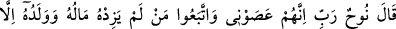
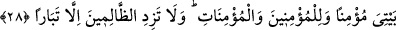

ZÂLİMLERİN ANCAK
HELÂKİNİ ARTTIR
21. (Öğütlerinin fayda vermemesi üzerine) Nûh: Rabbim! dedi, doğrusu bunlar
bana karşı geldiler de, malı ve çocuğu kendi ziyanını arttırmaktan başka işe
yaramayan kimseye uydular.
22. Onlar da, büyük hileler, büyük desiseler kurdular!
23. Ve dediler ki: Sakın ilâhlarınızı bırakmayın; hele Ved, Suvâ, Yeğûs, Ye’ûk ve
Nesr’den asla vazgeçmeyin!
24. (Böylece) onlar gerçekten birçoklarını saptırdılar. (Rabbim!) Sen de bu
zâlimlerin ancak şaşkınlıklarını arttır!
25. Bunlar, günahları yüzünden suda boğuldular, ardından da ateşe sokuldular ve
o zaman Allah’a karşı yardımcılar da bulamadılar.
26. Nûh: «Rabbim! dedi, yeryüzünde kâfirlerden hiç kimseyi bırakma!»
27. «Çünkü sen onları bırakırsan kullarını saptırırlar; yalnız ahlâksız, nankör
(insanlar) doğururlar (yetiştirirler).»
28. «Rabbim! Beni, ana-babamı, îman etmiş olarak evime girenleri, îman eden
erkek ve îman eden kadınları bağışla, zâlimlerin de ancak helâkini arttır.»
“Nûh dedi ki” ifâdesi, Nûh (a.s.)’ın Rabbine yakarışının hikâye edildiği âyetten
buraya kadar epey zaman geçtiği için tekrar edilmiştir. Buradaki “dedi ki” cümlesi,
yukarıda geçen “dedi ki”den bedeldir. Bu sebeple başına atıf harfi getirilmemiştir.
Buna göre âyetin mânâsı; Nûh Rabbine yakararak dedi ki: “Ey benim Rabbim, bunlar
bana isyan ettiler.” Yâni bana olan isyanlarına devam ettiler. Öğüt ve hatırlatma ile